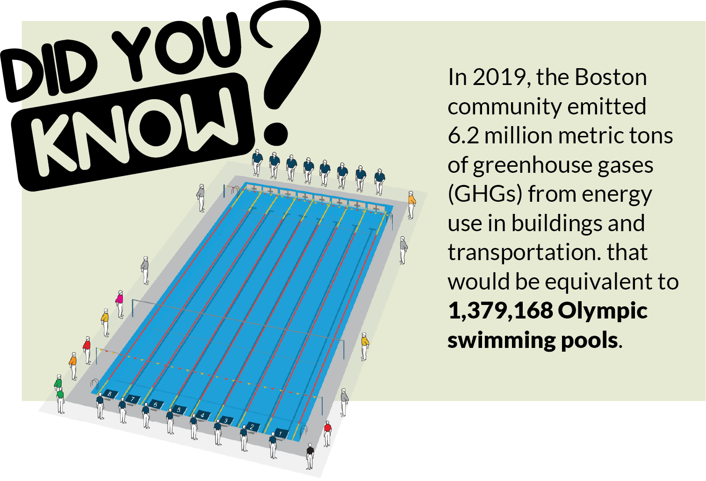
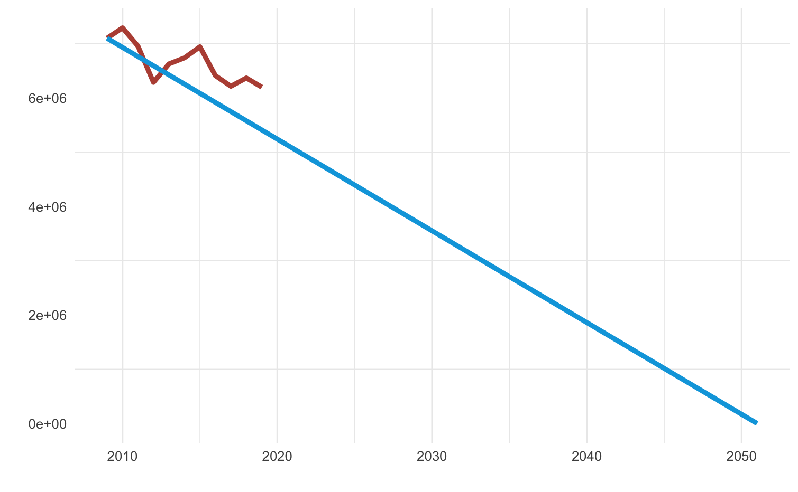
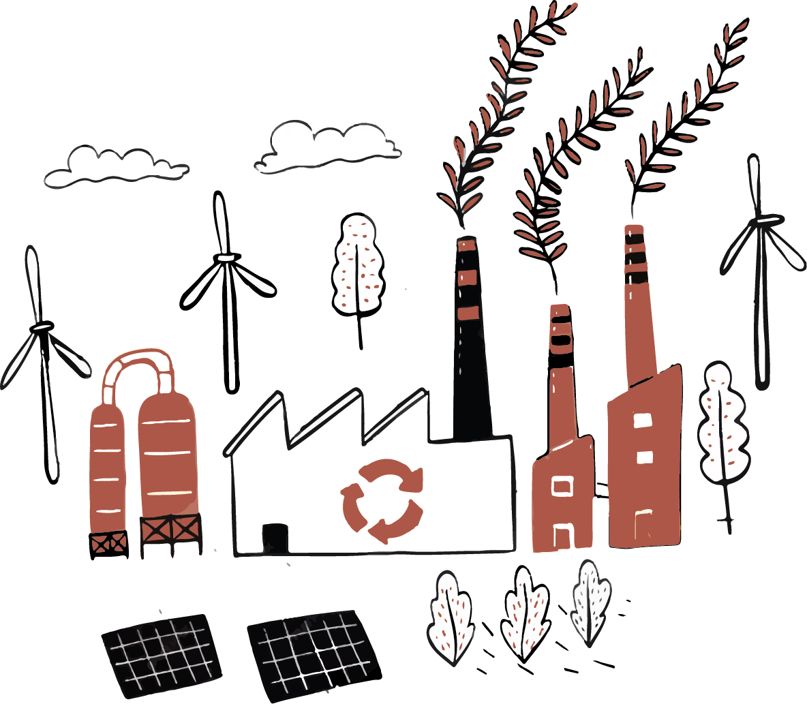
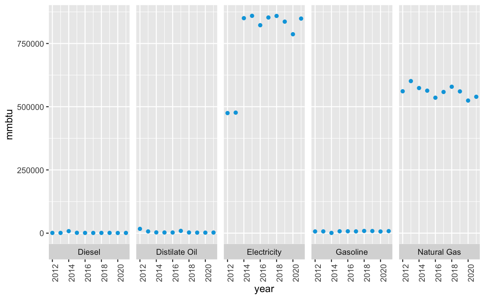
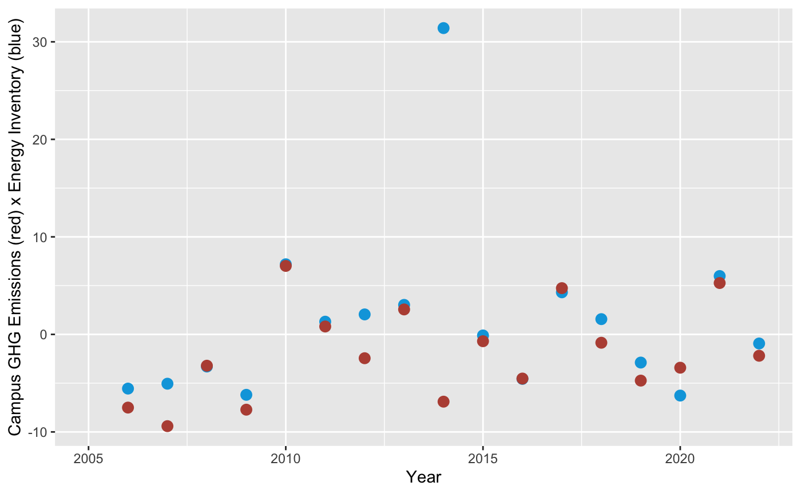
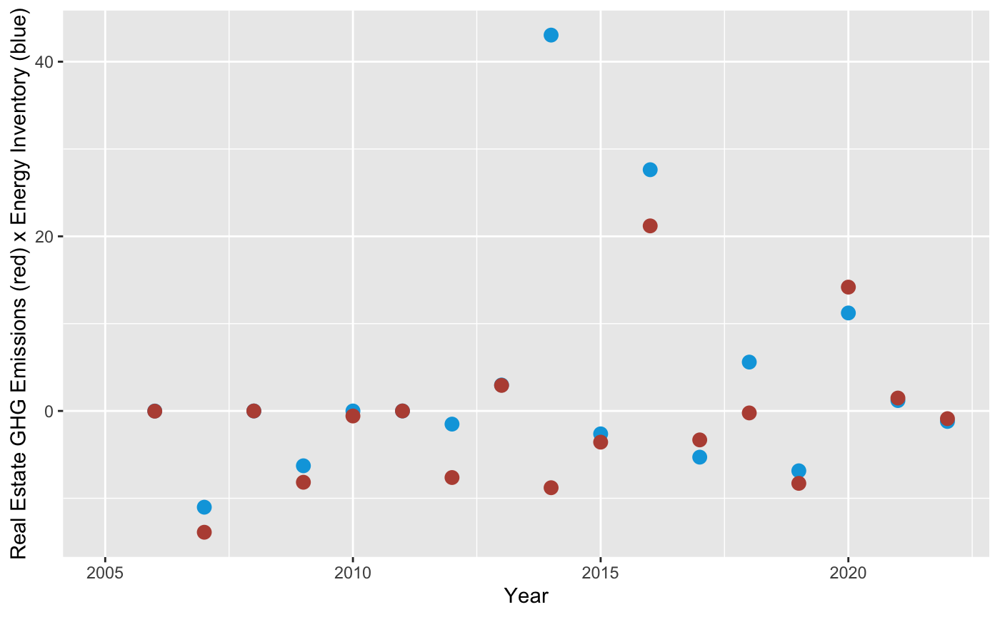
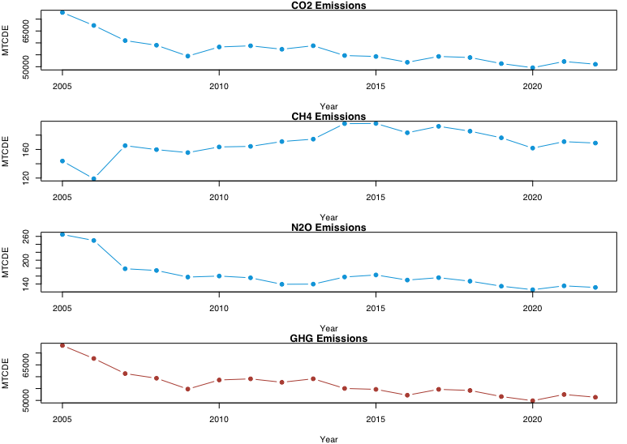

Welcome to Northeastern University in the Heart of Boston!
We're thrilled to have you join us on this exciting journey. Boston is not only a city steeped in history but also a place deeply committed to sustainability. Here at Northeastern, sustainability is more than a concept; it's a way of life. From eco-friendly campus initiatives to green clubs and daily sustainable habits, you'll find plenty of opportunities to be part of our commitment to a greener future. Welcome to a university where your education includes making a positive impact on the world around you.
The City of Boston dedicated to tackling climate change through a series of initiatives aimed at reducing its greenhouse gas (GHG) emissions and fostering a sustainable energy profile. The city has implemented stringent energy-efficient building codes, bolstered public transportation infrastructure, and embraced renewable energy sources. Committed to achieving carbon neutrality by 2050, Boston's efforts reflect its dedication to mitigating climate change and ensuring a greener, more resilient future for its residents and the environment.


From Boston to Huntington Ave!
Boston and Northeastern Population Annual Percent Change
Over the past eight years, the annual changes in undergraduate and graduate enrollment, along with the population growth in Boston, have painted an interesting picture. In terms of undergraduate enrollment, there has been a consistent but somewhat modest increase for both men and women, with men seeing a slightly higher percentage change. Graduate enrollment, on the other hand, has been more volatile, with significant fluctuations in both men and women categories. Notably, 2021 marked a remarkable surge in graduate women enrollment, with a staggering 72.77% increase. Meanwhile, the Boston population has been steadily growing at a relatively stable rate. These data points reflect the dynamic nature of education and population trends in Boston over this period, with potential implications for the city's academic institutions and social landscape.
Why does this matter?
From the coffee you drink to the choices you make about meals, waste, energy, and transportation, every aspect of your daily life as a student can be a meaningful step towards sustainability. Your coffee can support ethically sourced beans, your meals can back local, sustainable agriculture, and waste reduction becomes a commitment to recycling and reusable products. Conserving energy becomes second nature in your dorm, and you'll find eco-friendly transportation options like walking and biking at your fingertips. Your daily actions aren't just routines; they're opportunities to shape a more sustainable campus and a brighter future for our planet.
Commuting & Transportation
Healthy, Convenient, and Eco-Friendly.
Alternative modes of transportation provide reduced commuting costs, reduced stress, improved health, and benefit the environment. Boston campus transportation options include walking, biking, public transportation, electric vehicles, and carpooling. Northeastern encourages alternative modes of transportation for convenient, healthy ways to lessen the environmental impact. Check below for helpful information on the transportation options and benefits available.
Ride and Drive for a Sustainable Future | Location: Mathews Arena.
Ride and Drive for a Sustainable Future | Location: Mathews Arena.
Northeastern University just took another step in establishing a pathway toward a more sustainable future, and Facilities Management at Northeastern is helping to pave that road.
Northeastern University with the sole goal of accelerating the electrification of transportation within the city of Boston and beyond. Northeastern is determined to maintain its rank as one of the leading organizations in promoting energy advancement throughout the Commonwealth of Massachusetts.
Transportation Options
Blue bikes at Northeastern University.
New Blue Bkies Station | Location: Forsyth Street.
Biking is a great way to exercise and save money on your commute to campus. Northeastern provides convenient blue bike racks and protected storage, bike registration, and bike-sharing.
The visualization (area graph) provides an overview of the use of Blue Bikes since 2011-2022. From the data, we can understand the trends, and growth of blue bikes system from the year 2011 to 2022.
Utilizing blue bikes is environmentally beneficial as it eliminates CO2 emissions. By opting for this sustainable mode of transportation, individuals contribute to a cleaner atmosphere, mitigating the environmental impact associated with traditional fossil fuel-powered vehicles and fostering a healthier, more eco-friendly urban environment.
Electric Vehicle Charging - Expansion!
Electric Vehicles Charging Station | Location: Columbus Gaarage.
Northeastern has 32 charging stations available to faculty, students, staff, and visitors in the Columbus, Renaissance Park, and Gainsborough garages. Visitors can use Renaissance Park or the Gainsborough garages.
EV Charging at Northeastern University
The bar graph provides a comphrehensive overview of the key metrics related to the University's EV charging facilities from January 2022 to August 2023. Delving into the data, we explore crucial parameters such as the number of charging ports available, the frequency of charging sessions, as well as the energy consumption and accumulation trends during this period. This visualization helps us understand Northeastern University's sustainable transportation over time.
Electric Vehicle Carsharing on Northeastern's Campus.
Good-To-Go: An equity-focused carsharing program that provides a fleet of safe, affordable, and environmentally friendly transportation.
Lets save our planet together!!!
ARTG5330 | Mihir Vishwasrao
Decoding Northeastern's Footprint


The data reveals consumption trends for different energy sources from the last 10 years at Northeastern University. Gasoline, diesel, and electricity are notable, with gasoline showing volatility, diesel fluctuating, and electricity growing steadily. Diesel usage is erratic, while natural gas remains stable. These trends suggest a shift toward cleaner energy sources, relevant for policymaking.
The GRAPH represents building emission values for a campus, displaying the environmental impact of various campus buildings in terms of their KgCO2e rates. The radial plot provides a visual overview of these emissions, where each bar corresponds to a building, and the height of the bar represents the KgCO2e rate.
The graph highlights the buildings with the highest emissions by labeling the top five buildings with the darkest colors, making them easily identifiable. This visual emphasis draws attention to the specific buildings that have the greatest impact on emissions within the campus.
Overall, this graph allows viewers to quickly identify the buildings with the highest emission values, making it a useful tool for assessing and addressing environmental concerns within the campus infrastructure.
Northeastern's Buildings We Know and Love!!!
The graph represents building emission values for a campus, displaying the environmental impact of various campus buildings in terms of their KgCO2e rates. The radial plot provides a visual overview of these emissions, where each bar corresponds to a building, and the height of the bar represents the KgCO2e rate.
The graph highlights the buildings with the highest emissions by labeling the top five buildings with the darkest colors, making them easily identifiable. This visual emphasis draws attention to the specific buildings that have the greatest impact on emissions within the campus.
Overall, this graph allows viewers to quickly identify the buildings with the highest emission values, making it a useful tool for assessing and addressing environmental concerns within the campus infrastructure.
Annual Change in Emissions vs. Energy Use

Northeastern Campus GHG Emissions

Northeastern's Real Estate GHG Emissions
These datasets, one for campus-wide emissions and energy and the other for real estate-related emissions and energy use at Northeastern University, provide critical insights. Notably, while both datasets show increased energy consumption over time, the campus-wide emissions dataset exhibits fluctuating emissions levels, indicating additional influencing factors. In contrast, the real estate-related emissions data follows a more consistent trend, suggesting a direct link between energy usage and emissions in this context. These findings enable students to delve into the complexities of sustainability efforts on campus, guiding initiatives to reduce emissions and improve energy efficiency.
University Emissions
This graph presents an overview of greenhouse gas emissions at the Boston campus of Northeastern University from 2005 to 2022. Beyond the general GHG summary, the graph further breaks down emissions by individual gases (CO2, CH4, N2O), allowing viewers to discern the contribution of each gas to the total emissions over the years.

Sources of GHG Emissions (2005 - 2022)
After providing a broad view of the campus's GHG emissions, this chart delves deeper to highlight the specific sources of these gases. Emission sources are segmented into three categories: on-campus stationary activities, direct transportation, and externally purchased electricity.